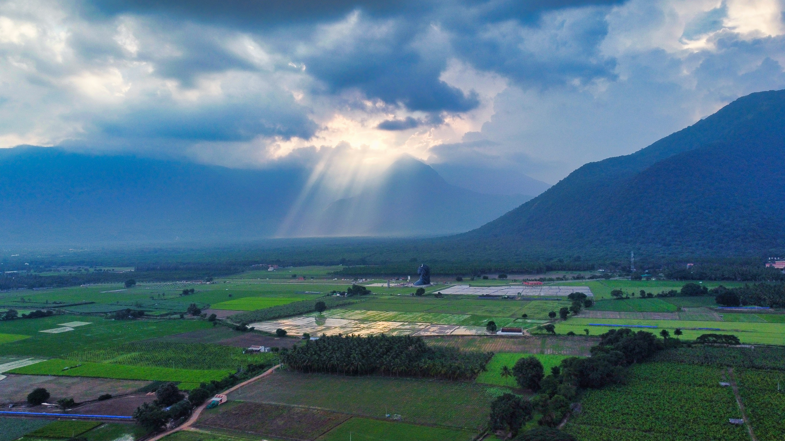

Photo: Cymatics In / UnsplashAccelerator Workshop · India 2026
Surrounded by nature and home to an international community,
the center offers a calm and supportive environment for immersive learning, personal growth, and meaningful connection.